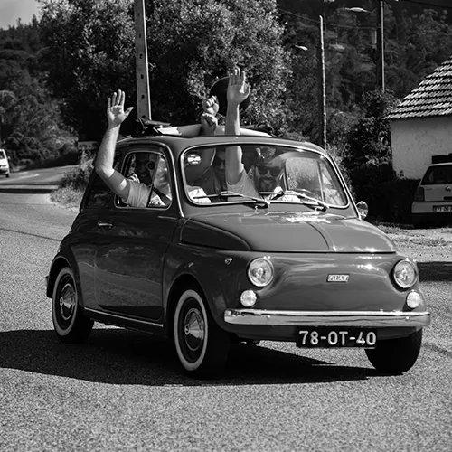

Fiat History at a Glance
- Foundation (1899): Established in Turin by Giovanni Agnelli and a group of investors (FIAT stands for Fabbrica Italiana Automobili Torino).
- Italian Icon: Quickly became Italy's leading automaker, defining the country's industrial growth.
- Post-War Rebirth (1950s): Launched the iconic Nuova 500 in 1957, motorizing Italy and becoming a symbol of accessible design.
- Global Expansion & Merger (2014): Acquired Chrysler Group, forming Fiat Chrysler Automobiles (FCA).
- Current Era (Stellantis): Merged with PSA Group in 2021 to form Stellantis, focusing on electric mobility and sustainable urban transport.

Przegląd Nadwozi i Modeli
- Hatchbacki / Samochody Miejskie:
- Fiat 500 / 500e / 500 Hybrid: Ponadczasowa ikona ruchu miejskiego, dostępna zarówno z napędem hybrydowym, jak i w pełni elektrycznym.
- Fiat Panda / Pandina / Grande Panda: Praktyczne, kanciaste i niezwykle przestronne auta miejskie, słynące z genialnego wykorzystania przestrzeni.
- Fiat Tipo Hatchback: Kompaktowy, rodzinny samochód oferujący świetny stosunek ceny do jakości i przestronne wnętrze.
- Sedany i Sedany Kompaktowe:
- Fiat Tipo Sedan: Klasyczne, eleganckie nadwozie trójbryłowe z dużym bagażnikiem, bardzo popularne na rynkach europejskich.
- Fiat Cronos: Nowoczesny, dynamicznie stylizowany sedan segmentu B, będący rynkowym hitem na rynkach globalnych.
- Kombi (Estate / Station Wagon):
- Fiat Tipo Station Wagon: Wyjątkowo pakowne kombi, idealne dla rodzin i klientów biznesowych szukających maksymalnej przestrzeni ładunkowej.
- Mikroauta i Mikrosamochody (Quadricycles):
- Fiat Topolino: Uroczy, w pełni elektryczny pojazd czterokołowy stworzony do bezemisyjnego manewrowania po ciasnych centrach metropolii.
- Kombivany i Pojazdy Wielozadaniowe (MPV):
- Fiat Doblò (Wersje Osobowe): Synonim wszechstronności; niezwykle pojemne nadwozie z przesuwnymi drzwiami, idealne dla dużych rodzin i aktywnego stylu życia.
- Pick-upy:
- Fiat Strada & Toro: Globalne bestsellery łączące komfort jazdy samochodu osobowego z surową praktycznością i ładownością otwartej przestrzeni bagażowej.
Dlaczego Warto Wybrać Markę Fiat?
Fiat od ponad wieku udowadnia, że samochód nie musi być jedynie narzędziem do przemieszczania się – może być częścią włoskiego stylu życia (Dolce Vita), łącząc emocje z czystym pragmatyzmem. Wybór Fiata to decyzja oparta na przemyślanych fundamentach:
- Mistrzostwo w zagospodarowaniu przestrzeni: Inżynierowie Fiata są uznawani za niekwestionowanych królów segmentu małych aut. Każdy model projektowany jest od wewnątrz do zewnątrz – zewnętrzny footprint pozostaje kompaktowy, ułatwiając parkowanie, podczas gdy kabina oferuje zaskakującą przestronność i ergonomiczne schowki.
- Unikalny włoski design i charakter: Samochody tej marki wyróżniają się w szarym tłumie. Od kultowego, przyjaznego "spojrzenia" linii 500 po odważne retro-pikselowe linie najnowszej Grande Pandy – Fiat wnosi na drogi radość, żywe kolory i śmiałe wzornictwo przemysłowe.
- Demokratyzacja nowoczesnej technologii: Fiat wierzy, że innowacje powinny być użyteczne i dostępne dla każdego, a nie stanowić luksus dla wybranych. Rozwiązania takie jak modułowe wnętrza, zaawansowane systemy multimedialne oraz napędy Mild Hybrid są wdrażane tak, by realnie obniżać koszty eksploatacji bez sztucznego zawyżania ceny zakupu.
- Elastyczność i zielona transformacja: Dzięki przynależności do koncernu Stellantis, Fiat oferuje unikalną swobodę wyboru napędu na tej samej platformie. Klienci mogą płynnie decydować między tradycyjnymi jednostkami benzynowymi, oszczędnymi hybrydami a zaawansowanymi technologicznie, bezemisyjnymi modelami elektrycznymi (BEV).
Kontakt i Więcej Informacji
Odwiedź oficjalną stronę Fiat Polska, aby skonfigurować swój model lub umówić się na jazdę próbną w najbliższym salonie.